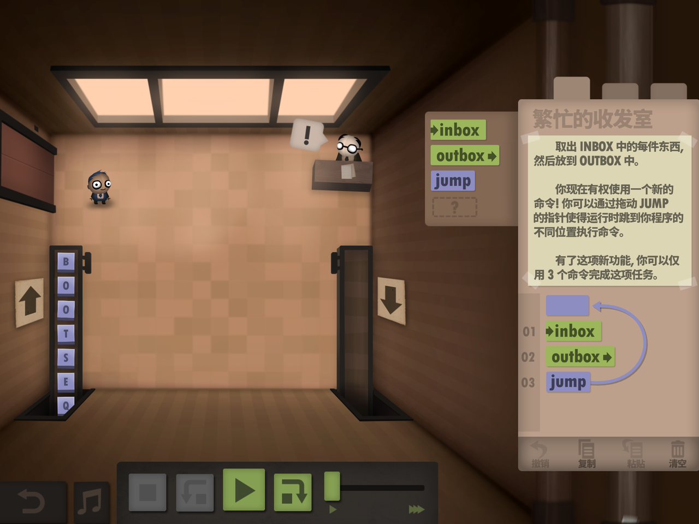

面向眼科医生的λ演算入门教程(8)
三生万物
有数据有数据结构有分支结构，就差循环了。终于要讲著名的Y combinator了。
现在你想学习Y combinator的话，会有个麻烦。如果在搜索引擎上搜索Y combinator的话，找到的肯定是那个创业公司孵化器YC. 这也不意外，因为YC的创始人就是著名的黑客Paul Graham，他写的《黑客与画家》也很好看。lambda calculus这种可以hack世界的东西，当然他也很喜欢，于是就用其中的Y combinator命名了自己创立的孵化器。
但问题是YC孵化器太成功了，产生了一个又一个知名企业，以至于名声盖过了Y combinator算子本身。所以如果你真的想找到有用信息的话，需要搜索“Y combinator+lambda” 才能找到。
循环
我们先从实用的角度考虑，有些很重要的事情需要重复做，比如玩人力资源机器Human Resource Machine 第2关以后的所有关卡，就要有跳转实现循环才能完成。  但跳转是非常不好的实现循环的方法，很快你就会把自己跳晕。
更为优雅地实现循环的方式是递归，类似凝血酶原转化为凝血酶，凝血酶又激活凝血酶原，只要有资源就可以一直循环下去。
另一个常用的例子是求Fibonacci数列吧：
F(0)=0 F(1)=1 F(i)=F(i-1)+F(i-2)
在你不知道其实有通项公式以前，（哪天我要表演一遍用母函数推导）
$$ F_n = \frac{1}{\sqrt 5} (\frac{1+\sqrt 5)}{2})^n -\frac{1}{\sqrt 5}(\frac{1-\sqrt 5)}{2})^n $$
要求F(n)，通常的算法是这样的：
定义函数 fib(n):
如果n<2，返回n
否则，返回fib(n-1)+fib(n-2)
在名叫fib的函数内部，又一次调用了函数fib。在之前部分，我们已经学过如何定义函数，如何使用if，如何表现数字，如何做加法，小于没说但用于实现减法和比较的pair已经讲过，只差递归了。
这种递归的方法只有当函数有名字的时候才能实现。所以如果是用lambda calculus，这种匿名函数语言，是没有办法使用带有名字的召唤术。
: 我叫你的名字你敢答应么？ : 呵呵，我没名字
我们之前使用interpreter中的字典功能，并不是给一段代码起了名字，而只是一个缩略符号，是interpreter给的小工具。
没有名字如何调用自己？
当然是可以的，比如
ω=(λx.(x x))
那么：
ω ω=(λx.(x x)) ω
做β reduction，就是用ω替代x x中的x，变成 ω ω。于是
ω ω=(λx.(x x)) ω =ω ω
看，循环了，而且永久进行下去不会停歇。
这个叫做ω combinator，所谓combinator，就是lambda expression里面都是bound variables，没有free的。
ω combinator并不能执行有意义的操作，它产生了循环，但定义中只有x，所以它顶多能够调用自身，并没有办法将其他的操作加入到循环体内部。我们需要还需要更多的变量，需要的是Y combinator。
Y combinator
Y=(λx.λy.( y (x x y))) (λx.λy.( y (x x y)))
这就是Y combinator，Y由两个重复的部分构成，直接看过去你就会发现这个并没有进行完全的化简，后面的部分并没有代入到前面部分里。为了容易描述，我擅自命名重复的部分为Ypart，那么Y=Ypart Ypart
Y foo foo表示另外一个函数 = (λx.λy.( y (x x y))) (λx.λy.( y (x x y))) foo 故意写开一点，容易辨识 = (λx.λy.( y (x x y))) Ypart foo 把Y看成两部分，在加上foo，是3个expression = λy.( y (Ypart Ypart y)) foo 把Ypart代入，替换掉x = foo (Ypart Ypart foo) 把foo代入，替换掉y = foo (Y foo) Ypart Ypart不就是Y本身么
于是
Y foo = foo (Y foo)
= foo (foo (Y foo))
= foo (foo (foo (Y foo)))
看看看，循环出现了！而且还把外来的foo函数塞进了循环里面。把Y作用在foo上，就生出了新的foo，然后一直生一直生。
明白Y combinator(公司)为什么要叫Y combinator(算子)了吧。
至此，数和数的运算，数据结构，分支，循环都有了。降龙十八掌打完收工。
道生一，一生二，二生三，三生万物。
少年，你可以去创造世界了。